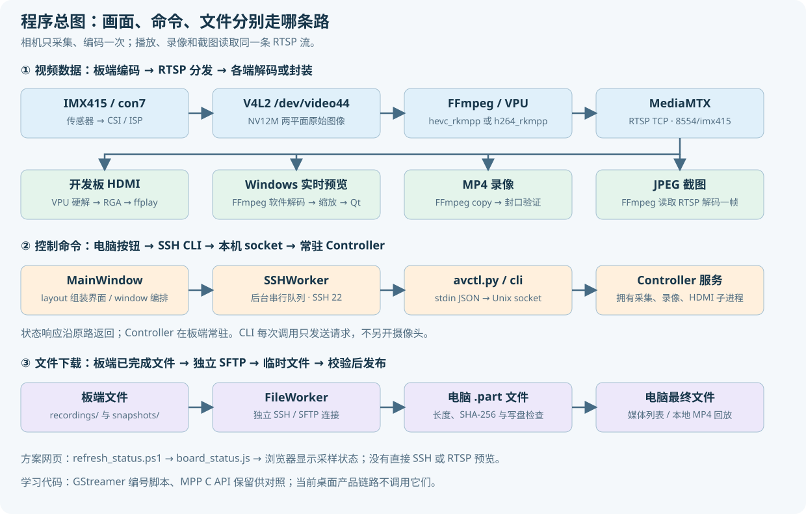

项目程序逻辑与目录导航
这份文档是现在的源码阅读入口。先理解三条链路，再按模块读代码。当前产品使用 Windows 控制台 + 板端 FFmpeg / RK3588 VPU + MediaMTX；MPP C API 和 GStreamer 代码保留用于学习与旧方案对照。
本轮只整理源码和文档，没有增加功能、更新已发布 EXE 或切换开发板程序。已有免安装包为已验收的 1.1.0；下面的模块划分对应本轮整理后的源码。
1. 先看整张图

三条链路互相配合，但承担不同任务：RTSP 传画面，SSH 传操作，SFTP 传文件。板端只有一个采集编码进程持有 /dev/video44；电脑预览、HDMI、录像和截图从 RTSP 获取内容。
2. 哪份代码才是修改源
| 项目位置 | 用途 | 修改原则 |
|---|---|---|
board/ffmpeg_pipeline/ |
当前板端产品源码 | 板端功能在这里修改 |
desktop/ |
Windows 桌面源码、依赖、测试、打包 | 电脑界面和控制在这里修改 |
docs/*.md |
文档编辑源 | 编辑 Markdown，再生成同名 HTML |
tools/ |
文档生成、检查、源码交付与测试工具 | 用于开发与交付，不是常驻服务 |
| 根目录方案 HTML | 当前方案入口、文档链接、运行状态快照 | 保留现有文件名，方便本地打开 |
board/v4l2_mpp_enc/ |
MPP C API 学习源码 | 与当前产品链路分开理解 |
board/00_…07_…sh |
环境检查、原 GStreamer 方案 | 编号不表示当前 FFmpeg 启动步骤 |
音视频代码包/、源码 ZIP |
自动生成的交付副本 | 从根目录源码重新生成，避免两份代码分别修改 |
desktop/dist/、EXE ZIP |
已构建的桌面交付物 | 改源码不会自动改变已生成 EXE |
_work_desktop/、_work_ffmpeg/、backups/ |
本地验证材料和备份 | 不属于产品源码，不进入 GitHub |
evm3588_linux_v1.0.3/ |
厂商 SDK 和本地参考 | 本项目不把整个 SDK 上传 GitHub |
三个易混淆的路径：电脑的根目录 board/ 是源码；音视频代码包/board/ 是复制品；开发板的 /userdata/av_dev/ 是部署位置。Windows 的 C:\... 不能在板端 Bash 中直接进入。
3. 启动入口有哪些
| 入口 | 执行位置 | 真正做什么 |
|---|---|---|
desktop/main.py 或已发布 EXE |
Windows | 创建 Qt 应用、主窗口和后台工作线程 |
board/ffmpeg_pipeline/avctl.py |
开发板 / SSH 会话 | 一次性 CLI：解析操作，把请求转给后台服务，返回 JSON |
avctl.py _serve |
板端 systemd | 常驻控制服务，拥有 Controller 与采集、录像、HDMI 子进程 |
runtime/bin/mediamtx |
板端 systemd | 接收编码发布，向多个读者分发 RTSP |
deploy.ps1 |
Windows PowerShell | 上传源码，保留运行中的管线；不是直播启动器 |
refresh_status.ps1 |
Windows PowerShell | 查询状态，生成本地 board_status.js 快照 |
只读查询示例，开发板 Bash：
python3 /userdata/av_dev/ffmpeg_pipeline/avctl.py status
解释：python3 执行统一 CLI；status 返回后台服务的实际运行状态，不重新打开摄像头。这个路径是开发板部署路径。
4. 桌面程序的阅读顺序
| 顺序 | 文件 | 重点 |
|---|---|---|
| 1 | main.py | 应用入口、版本、窗口启动 |
| 2 | window.py | 初始化、信号连接、按钮操作、状态回写、退出 |
| 3 | layout.py | 首页和四个面板，控件如何绑定回调 |
| 4 | core.py | Connection、默认配置、按钮允许条件、JSON 和帧拼接 |
| 5 | ssh.py | 主机校验、串行操作、轮询、重连与会话编号 |
| 6 | video.py | FFmpeg 参数、完整帧、最新帧、看门狗与进程清理 |
| 7 | files.py | 独立 SFTP、路径约束、摘要、临时文件、下载取消 |
| 8 | playback.py | 已下载 MP4 的本地回放窗口 |
| 9 | widgets.py | 外观样式、状态卡片、画面绘制 |
layout.py 只组装界面并连接回调，控件引用保存在 MainWindow 上。window.py 负责协调，不在按钮回调里做阻塞 SSH、SFTP 或视频解码。三个工作线程之间没有相互调用 Qt 控件；它们通过信号与主窗口通信。
5. 板端程序的阅读顺序
avctl.py 现在只保留入口。实现集中在 camera_control/，外部命令和 systemd 路径保持原样。
| 文件 | 输入 / 输出 | 责任 |
|---|---|---|
| cli.py | 命令参数、stdin JSON → 单行 JSON / 退出码 | 解析操作，不拥有硬件资源 |
| transport.py | Unix socket 请求 / 响应 | 后台服务、单实例锁、请求调度、统一错误包装 |
| config.py | 配置字典 → 已校验配置 | 默认值、参数范围、ROOT、RTSP 地址和错误类型 |
| controller.py | 操作请求 → 实际子进程与状态 | 采集、录像、HDMI、截图、参数恢复与监测 |
| support.py | 路径、设备节点 → 辅助结果 | 时间、日志、原子写入、占用检查、传感器帧率 |
Controller 保留集中式生命周期管理。采集、录像和 HDMI 的启停相互关联，统一拥有它们可以避免几个模块分别修改相同进程或锁。它仍是核心大模块，本轮先明确职责边界，而不是把状态拆散到互不协调的对象中。
6. 点击“连接开发板”后
- MainWindow 收集地址、端口、用户名和认证方式；Connection 校验输入。
- 按用户选择处理 Windows 凭据管理器；个人配置不保存明文密码。
- SSHWorker 创建后台连接，核对已保存主机指纹；首次连接通过界面确认。
- 连接成功后调用板端
check、status，查询编码器能力和现有运行状态。 - 如果板端已有直播，VideoWorker 直接读取 RTSP；不会再启动第二个采集器。
- FileWorker 使用独立连接列出已保存的录像和截图；控制和下载可以独立工作。
SSHWorker 没有操作时约每秒查询状态；执行操作时暂停叠加轮询。连接恢复后重新查询实际状态，不自动重复发送已经超时的启停或录像请求。
7. 点击“启动直播”后
MainWindow.action()锁住重复点击，把start交给 SSHWorker。- SSHWorker 执行固定 CLI 命令。配置通过 JSON 标准输入传递，不拼进 shell 命令。
- 板端 CLI 将请求发送到
state/control.sock；需要时启动相关 systemd 服务。 - 服务用
operation_lock串行处理会改变运行状态的请求。 Controller.start()校验配置、录像保护、传感器帧率和旧状态；相同参数且直播已运行时直接返回状态。begin_capture()检查摄像头占用、MPP 编码器和 STREAMOFF 后的间隔，然后启动私有 FFmpeg。- FFmpeg 从 V4L2 取 NV12M 图像，使用
hevc_rkmpp或h264_rkmpp硬编，向 MediaMTX 发布 RTSP。 - 后台读取 FFmpeg
-progress，结合 MediaMTX 就绪状态判定是否真正出流。桌面收到实际状态后接入画面。
H.265 压缩由 FFmpeg / MPP / VPU 承担，Python 层配置和管理进程。本项目的 NV12M 补丁解决采集兼容，保存在 patches/，与控制层分别维护。
8. 画面怎样来到电脑屏幕
VideoWorker 启动独立 Windows FFmpeg，通过 RTSP TCP 解码、按预览档位限帧缩放，输出 BGR24 到管道。FrameAssembler 根据宽×高×3 组装完整帧，处理一次读取不足一帧的情况。
后台只保留最新完整帧。主窗口定时取帧，由 VideoCanvas 绘制；显示来不及时丢弃旧画面，避免队列不断积累延迟。切换预览档位只重建电脑播放器，不改变原始直播、板端 HDMI 和 MP4 分辨率。
播放器进程与看门狗绑定当前代次。旧进程的帧和错误不能用于新的预览；出帧停滞或进程退出后自动恢复。界面区分板端编码帧率、电脑解码帧率和实际显示帧率。
9. 录像与截图怎样工作
开始录像：控制服务确认直播就绪、没有未关闭录像、剩余空间不少于 1 GiB；另起 FFmpeg 读取 RTSP，以 -c:v copy 写 .partial.mp4。它使用已编码码流，不做第二次视频编码。
停止录像：向录像进程发送正常退出信号，等待 MP4 封口；使用 ffprobe 验证视频与时长，再改成完成文件名，保存 last-recording.json。失败的临时录像保留用于排查，不作为已完成文件下载。
截图：另起短时 FFmpeg 从 RTSP 解码一帧，生成 JPEG；结果返回文件路径，桌面自动下载。它不再从 V4L2 打开相机。
下载：FileWorker 只接受录像/截图目录内的有效文件，读取板端 SHA-256，下载到 .part，核对长度、摘要和本地写入后再改名。同名本地文件也要内容相同才能复用；下载失败不覆盖已有最终文件。
本地回放：playback.py 使用电脑已下载的 MP4 和独立 VideoWorker，关闭回放不会修改板端录像或直播。
10. 修改编码参数、停止与退出
修改编码参数使用同一个 start 操作携带配置，不存在另一个隐藏配置接口。录像中拒绝变更；服务记录旧配置和 HDMI 意图，受控重启并等待新流。失败时尝试恢复旧直播，JSON 返回恢复是否成功，桌面读取实际状态再恢复预览。
“停止直播”先结束录像，再停止自身 HDMI 和采集子进程。Controller 不会为了抢摄像头自动终止无关程序。
“断开控制”或关闭桌面只释放电脑连接、播放器和下载；板端服务、直播及录像继续。异步退出保留 Qt 事件循环，直到工作线程退出，不在界面线程等待 12 秒阻塞。
11. 状态、接口和错误
| 板端状态 | 判定含义 |
|---|---|
stopped |
没有采集进程，服务当前没有恢复采集的意图 |
starting |
采集进程存在，尚未满足近期出帧和 RTSP 就绪条件 |
running |
采集活着、有近期帧进度、MediaMTX 路径就绪 |
recovering |
采集未活着，但仍有恢复直播的意图 |
SSH 连接、电脑播放、HDMI 和录像是独立维度，不能仅靠一个“在线”字段表达。lastError 是历史事件；当前恢复后的直播不应因旧错误一直显示失败。
CLI 返回 ok 和 result，失败时返回 error；参数恢复信息可能在 result.recovery 内。退出码 0 表示操作返回成功，1 表示失败。状态字段包括 config、actualCapture、capturePid、encoder、vpuDeviceOpen、rtspReady、recording 和帧进度。
| 操作名 | 作用 |
|---|---|
check / status / logs |
能力、实际状态、最近日志 |
start / stop |
启动或受控重配直播 / 停止直播 |
preview-start / preview-stop |
板端 HDMI 读流播放器启停 |
record-start / record-stop |
手动录像开始 / 正常封口结束 |
snapshot |
从 RTSP 截图并返回保存路径 |
_serve |
systemd 内部入口，运行常驻控制服务 |
12. 线程、锁和文件所有权
| 对象 | 拥有什么 | 并发规则 |
|---|---|---|
| Qt 主线程 | 窗口和控件 | 只在主线程操作控件，不做阻塞网络调用 |
| SSHWorker | 控制连接、串行任务队列 | 会话编号防止旧任务用于新连接；变更操作超时不重发 |
| VideoWorker | 电脑 FFmpeg、完整帧和最新帧邮箱 | 锁保护当前播放器；看门狗只针对自己的进程 |
| FileWorker | 独立 SSH/SFTP、下载取消 | 不借用控制连接；先临时文件后最终文件 |
| Controller | 板端采集、录像、HDMI 子进程 | operation_lock 串行变更；lock 保护共享状态 |
| monitor / read_progress | 监测与帧进度读取 | 在同一 Controller 上更新状态，不能创建第二个拥有者 |
只读请求不占 operation_lock，但读状态仍可能等待 Controller 的状态锁。单实例文件锁避免两个控制服务同时拥有管线。常驻服务通过 Unix socket 提供控制，MediaMTX 管理 API 仅监听板端本机。
13. 配置和数据存在哪里
| 位置 | 文件类型 |
|---|---|
板端 config.json |
当前采集编码参数；config.example.json 是提交到仓库的默认模板 |
板端 runtime/ |
私有 FFmpeg、MPP/RGA 库、MediaMTX 与构建记录 |
板端 state/ |
控制 socket、服务锁、状态快照、上次完成录像信息 |
板端 logs/ |
FFmpeg 采集、录像、HDMI 日志 |
板端 recordings/ / snapshots/ |
MP4 与 JPEG |
电脑 %LOCALAPPDATA%\EVM3588CameraConsole\ |
连接设置、主机指纹、日志和预览偏好 |
| Windows 凭据管理器 | 用户选择保存的密码或私钥口令 |
| 用户选定的电脑下载目录 | 已下载媒体和短时 .part |
根目录 board_status.js |
方案网页使用的手动采样快照 |
真实配置、凭据、媒体、运行快照、备份和构建产物不进入 GitHub。网页只显示采样状态，不是桌面软件控制入口，也不会在浏览器中直接连接 SSH 或播放 RTSP。
14. 改功能应定位哪里
| 想修改 | 首先读 / 改 | 需要同步检查 |
|---|---|---|
| 按钮、布局、面板文案 | desktop/evm_console/layout.py |
回调仍连接 window.py，控件字段保持一致 |
| 按钮条件、错误反馈、操作顺序 | window.py、core.py |
服务实际状态、录像保护、信号回调 |
| SSH 行为与操作超时 | ssh.py |
CLI / socket 超时和断线后状态核对 |
| 电脑预览尺寸、帧率、恢复 | video.py |
完整帧大小、代次与清理；不误改板端参数 |
| 下载和内容校验 | files.py |
目录限制、临时文件、取消与同名文件 |
| 录像、截图和采集生命周期 | camera_control/controller.py |
FFmpeg 参数、封口、恢复、状态与互斥 |
| 参数范围和默认值 | camera_control/config.py |
桌面 core.py 与控件范围，二端不能各自随意扩大 |
| CLI / JSON 请求格式 | cli.py、transport.py |
桌面固定调用、操作指南、systemd 入口 |
| FFmpeg 采集兼容 | patches/、构建脚本 |
NV12M stride、平面偏移、释放与硬件实测 |
| 文档和方案导航 | docs/*.md、方案 HTML |
生成 HTML、链接检查、源码交付副本 |
15. 开发时建议按这个顺序
- 先确定修改属于界面、控制、视频、文件还是板端生命周期。
- 追踪一个真实操作到最终响应，明确哪一层拥有状态。
- 优先保持外部入口和 JSON 字段兼容；新增板端行为先验证接口，再加入界面。
- 先跑不触碰直播的单元测试，再安排确实需要启停相机的硬件验证。
- 最后更新文档、生成 HTML 和源码包；需要发布桌面软件时再单独构建 EXE。
电脑 PowerShell，项目根目录，运行桌面回归：
.\.venv-desktop\Scripts\python.exe -m pytest .\desktop\tests -q
解释：使用独立虚拟环境的 Python；-m pytest 运行测试模块；路径选择桌面测试；-q 简洁输出。这些单元测试不会启停真实板端直播。
电脑 PowerShell，项目根目录，生成和检查文档：
python .\tools\build_guide.py
解释：从 docs/*.md 生成对应 HTML。使用本机已有的 markdown-it-py；这是文档生成工具，不是桌面运行依赖。
python .\tools\check_guide.py
解释：解析文档中的 Bash / PowerShell 命令并检查相对链接，不执行指南中的部署和启停命令。